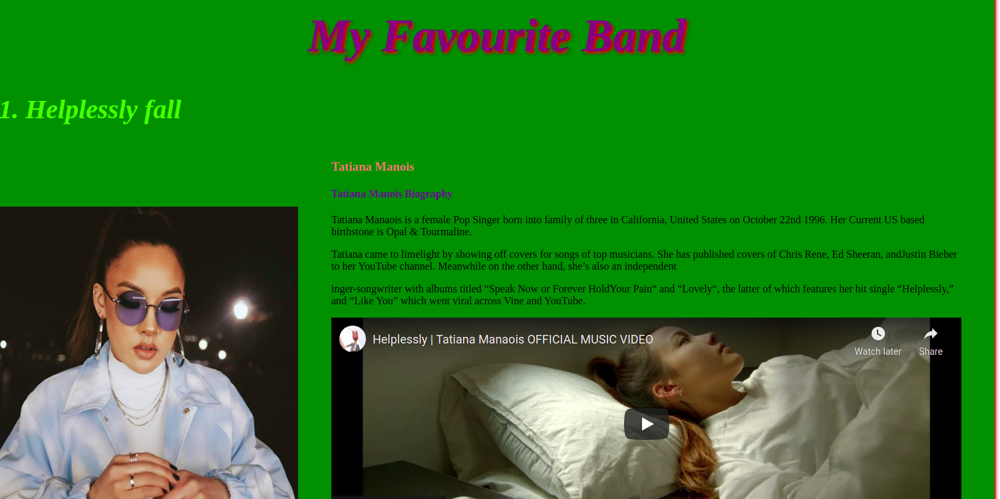
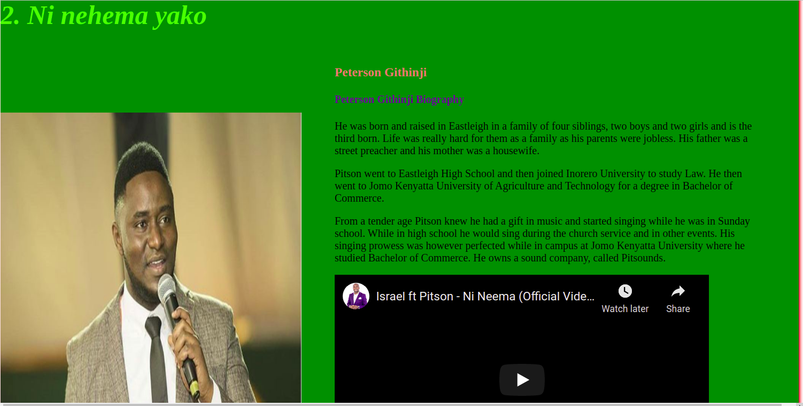
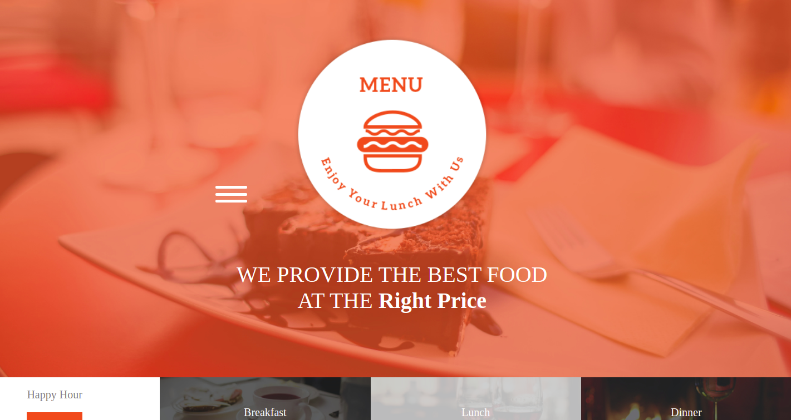
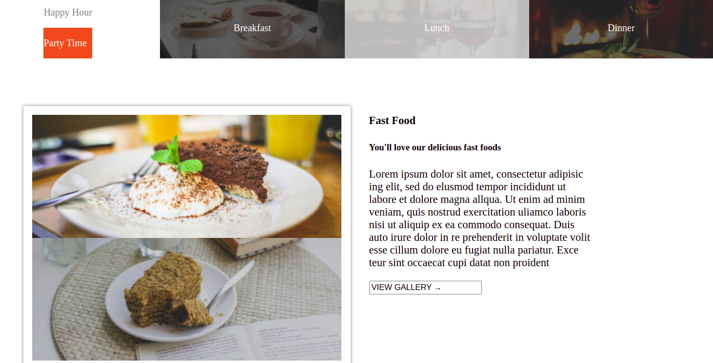
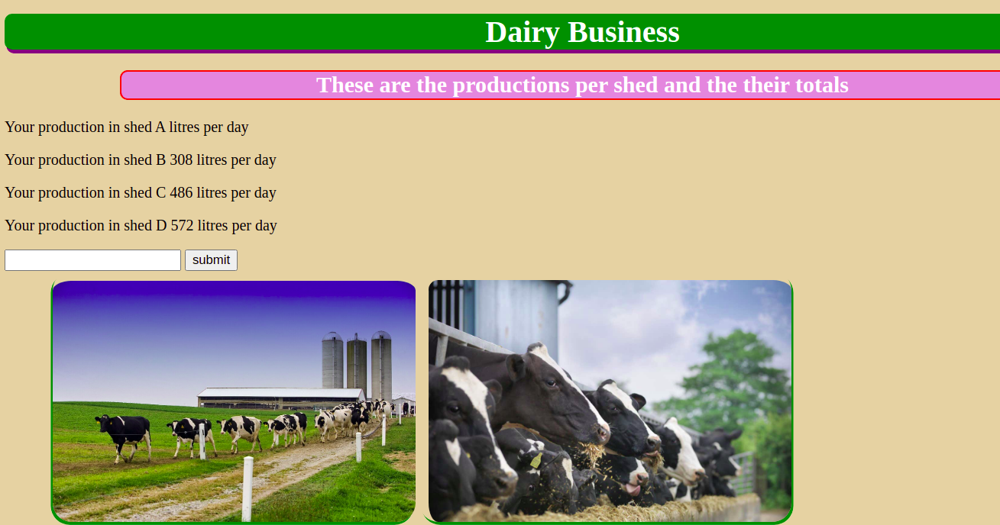

- My Favourite band
This was my first project ever. It was all about the songs that I loved most, though there
is no relation among them, but I just branded it My-Favourite band.


- Restaurants landing page
This was my second project. It was all about a landing page for a restaurant.
It Contained all the foodstuffs served e.g breakfasts, drinks, lunch and dinner.
It also contains the responses from some of our customers.Find all resources including a live demo here


- Dairy Business
Dairy businesss broject was my first project to apply Javascript knowledge. It was a project that aims in
automating the activities in my dairy business by collecting daily, weekly, monthly and yearly reports.
Click here to view.

- Danco Solutions
This project was about a business company of someone called Daniel. The business sells home and business
Electro-mechanical appliances.
- Timer
My timer project was my second project to apply Javascript. It resembles a stopwatch. Has start, stop and reset
clickable buttons. On clicking the start button the seconds start to increment by one, but upon reaching 60 seconds,
it jumps over to minutes and seconds start over again. This also happens to the hours side. Feel free to check the
source code and live demo here
.png)